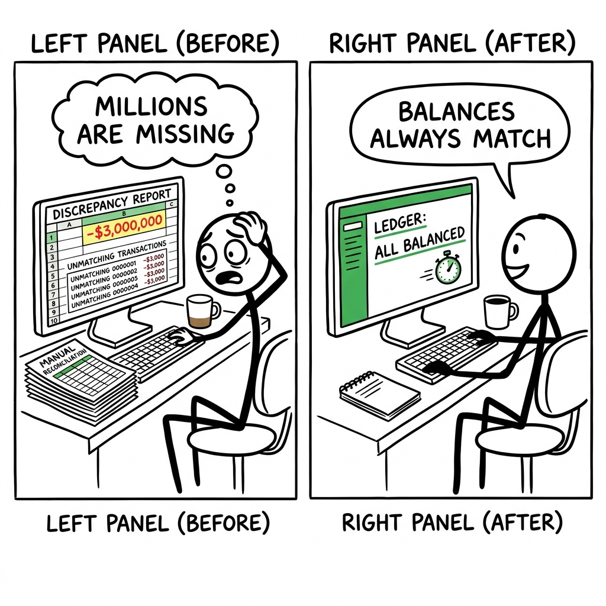

A financial operations engineer, responsible for managing customer accounts, stares at a discrepancy report, terrified that another "ghost transaction" means millions are missing from their custom-built ledger. Her real competitor isn't another transaction system, it's the endless array of spreadsheets, manual reconciliation scripts, and sleepless nights spent debugging why balances don't add up.

The trade it makes versus the dominant alternative.
What it gives up
- General-purpose data model: It cannot store arbitrary JSON documents or complex relational schemas directly, focusing solely on financial primitives.
- SQL compatibility: It doesn't offer a SQL interface, requiring integration via specific client libraries in various programming languages.
- Rich query language: Current query capabilities are limited compared to the powerful SQL or flexible NoSQL query languages found in general-purpose databases.
- Mature ecosystem: It lacks the vast tooling, extensions, and community support that established general-purpose databases have accumulated over decades.
- Flexibility of generic building blocks: It cannot be easily adapted to non-financial domains without significant effort or without sacrificing its core strengths.
What it gets in return
- Built-in financial integrity: It guarantees double-entry accounting rules and ACID compliance natively, preventing ledger imbalances by design at the database level.
- Extreme performance for financial workloads: It achieves very high transaction throughput and low latency specifically for financial transfers due to its purpose-built design in Zig.
- Simplified financial application development: It reduces complexity for developers building financial systems by offloading critical, domain-specific ledger logic and guarantees to the database.
- Reduced operational overhead for compliance: It provides an auditable, unforgeable ledger that simplifies compliance with financial regulations due to its inherent design.
- Predictable distributed scaling: It scales horizontally with built-in consensus, simplifying distributed deployments for financial systems handling large transaction volumes.
Traditional relational databases like PostgreSQL cannot integrate TigerBeetle's opinionated financial data model and bare-metal performance optimizations without fundamentally altering their generic SQL interface and broad applicability, which are their core business value. Similarly, distributed ACID systems like FoundationDB would lose their flexible, generic key-value semantics. High-performance NoSQL databases like ScyllaDB would need to sacrifice their eventual consistency model and rebuild their core engine to offer TigerBeetle's strict, transactional safety for financial primitives. A custom ledger solution, while achieving similar performance, would forever carry the burden of maintaining a bespoke, complex system, whereas TigerBeetle offers this as a robust, open-source product.
Four dimensions that actually split the field.
- Financial terms built-in: The database understands concepts like 'account', 'debit', and 'credit' as core features, not just generic rows you label yourself.
- Money transaction safety: Guarantees that money transfers always balance, even if the system crashes or many users act at once, so your ledger is never wrong.
- Grows with your business: How easily the database handles more users and data by adding more computers, without making your software much more complicated.
- Raw speed coding: How close the database code is to the computer's hardware, allowing for extreme speed by avoiding overhead from programming languages or operating systems.
| Product | Financial terms built-in | Money transaction safety | Grows with your business | Raw speed coding |
|---|---|---|---|---|
| TigerBeetle | FullFinancial entities (accounts, transfers) and rules (double-entry, pending transfers, balances) are core primitives, validated at the database level. (e.g. src/tigerbeetle.zig defines Account, Transfer, AccountFlags). | FullProvides strict ACID compliance for every transfer with double-entry validation at the database level, preventing imbalances even in distributed failures. (e.g. src/state_machine.zig shows atomic create_transfers with complex flag validations). | EasyDesigned for horizontal scaling with a built-in VSR (Viewstamped Replication) consensus protocol that handles data distribution and fault tolerance automatically. (e.g. README.md mentions 'global consensus protocol'). | FullWritten in Zig for bare-metal performance, minimal overhead, direct memory management, and fine-grained control over system resources. (e.g. src/vsr/checksum.zig uses hardware-accelerated AES instructions directly). |
| PostgreSQL | NoneStores data in generic tables; 'account' and 'transfer' are just names for rows and columns, with financial logic enforced by application code. | FullOffers strong ACID properties for SQL transactions, relying on row-level locks and transaction isolation to ensure data integrity. | HardScaling beyond a single node typically involves complex application-level sharding, replication (read replicas), or external tools for distributed transactions. | GoodWritten in C, offering low-level control, but still operates within a general-purpose operating system and database architecture. |
| FoundationDB | NoneStores generic key-value pairs; financial concepts are entirely built and enforced by the application layer on top. | FullProvides distributed ACID transactions across its entire dataset, ensuring consistency and isolation for complex operations at scale. | EasyBuilt for seamless horizontal scaling across many commodity servers, automatically distributing data and operations efficiently. | GoodCore is C++, optimized for performance, but uses a higher-level abstraction than Zig for managing data structures and concurrency. |
| ScyllaDB (Apache Cassandra) | NoneStores generic rows in tables; financial semantics are solely managed by the application layer, not the database itself. | EventualTrades immediate consistency for high availability and throughput; application logic must handle potential data inconsistencies and implement compensating transactions to ensure financial correctness. | EasyInherently distributed, designed to scale out by adding more nodes without requiring complex application-level sharding or coordination. | FullWritten in C++ and highly optimized to run 'close to the hardware,' using techniques like user-space networking and custom schedulers to bypass OS overhead. |
| Custom Ledger on RocksDB | PartialThe underlying RocksDB is generic, but the custom logic built on top explicitly implements financial terms directly in highly optimized data structures and application code. | CustomSafety depends entirely on the custom application logic, which may range from eventually consistent to highly-tuned ACID guarantees implemented manually at the application level. | HardScaling requires manually implementing distributed coordination, replication, and sharding across multiple instances, adding significant complexity to the bespoke solution. | FullRocksDB itself is highly optimized C++, and a custom wrapper can achieve bare-metal performance by carefully managing data access and system calls, often bypassing OS abstractions. |
Features hiding in the codebase that the README doesn't advertise. Each one is a bet about where the product is going.
- 1Marzullo's Clock Synchronizationsrc/vsr/clock.zigThe product is betting on absolute precision and consistency of time across a distributed cluster, a critical requirement for financial ledgers, implemented with a sophisticated academic algorithm.
- 2Proactive Data Scrubbersrc/vsr/grid_scrubber.zigThe product prioritizes extreme data durability and integrity by continuously scanning for and repairing latent disk errors in the background, a safeguard beyond typical transactional consistency.
- 3Native Two-Phase Transferssrc/state_machine.zig (TransferFlags), src/clients/go/README.mdThe product deeply understands complex financial workflows, baking atomic two-phase commit logic (pending, post, void) directly into its core, simplifying client-side implementation of conditional transfers.
- 4Historical Balances for Auditsrc/state_machine.zig (AccountFlags.history, AccountEvent, ChangeEventsFilter), src/clients/go/README.mdThe product is designed for rigorous auditability and regulatory compliance, offering not just current state but a full, immutable history of account balances and event changes as a first-class feature.
- 5Custom LSM with Specialized Merge Algorithmssrc/lsm/k_way_merge.zig, src/lsm/zig_zag_merge.zig, src/lsm/groove.zigThe product is built for extreme, domain-specific performance, investing heavily in a bespoke storage engine with highly tailored indexing, caching (CLOCK Nth-Chance), and optimized merge strategies for financial data.
- 6Robust Client Idempotency & Retriessrc/vsr/client_replies.zig, src/tigerbeetle.zig (CreateTransferStatus.transient)The product anticipates unreliable network environments and client failures, providing strong end-to-end idempotency guarantees and built-in mechanisms for clients to safely retry and recover from in-flight requests.
Features every competitor ships that this codebase deliberately doesn't. Strategy is choosing what not to do.
- 1No SQL or Query LanguageREADME.md, src/clients/*/README.md show only structured API calls (create_accounts, lookup_accounts, query_accounts) with fixed filter structs, no mention of SQL parser or query engine.Chooses maximum performance and a highly opinionated, optimized API surface over general-purpose data querying flexibility. This limits how developers can interact with data but ensures predictable high throughput. Risk: steep learning curve for developers accustomed to SQL.
- 2No Generic Distributed TransactionsOnly specific 'two-phase transfers' are implemented natively; no mentions of general XA transaction support or broader distributed commit protocols for arbitrary operations.Focuses laser-like on the core financial transfer primitive, avoiding the complexity and performance overhead of generic distributed transaction coordinators. This keeps the core lean but means clients must build custom distributed transaction logic for other use cases.
- 3No User or Access ManagementNo
CREATE USER,GRANT,REVOKEcommands or related data structures in the codebase or client APIs.Delegates user authentication and authorization concerns entirely to an external application layer or identity provider. This allows the database to stay focused on ledger integrity but requires clients to implement their own security boundaries. - 4No Integrated Analytics DashboardsThe API provides raw data access, but there's no code related to visualization, aggregation, or connecting to BI tools directly within the database context.Positions itself as a high-performance transactional data store rather than an analytical platform. It focuses on the source-of-truth for financial data, expecting other systems to consume and analyze that data.
- 5No Multi-Tenant IsolationThe concept of
cluster_idis present, but no logical separation or isolation for multiple distinct clients/organizations within a single running instance of TigerBeetle.Designed for dedicated, single-purpose financial ledgers per cluster, simplifying internal architecture and maximizing performance by avoiding multi-tenancy overhead. This implies higher operational costs for customers needing multiple isolated ledgers.